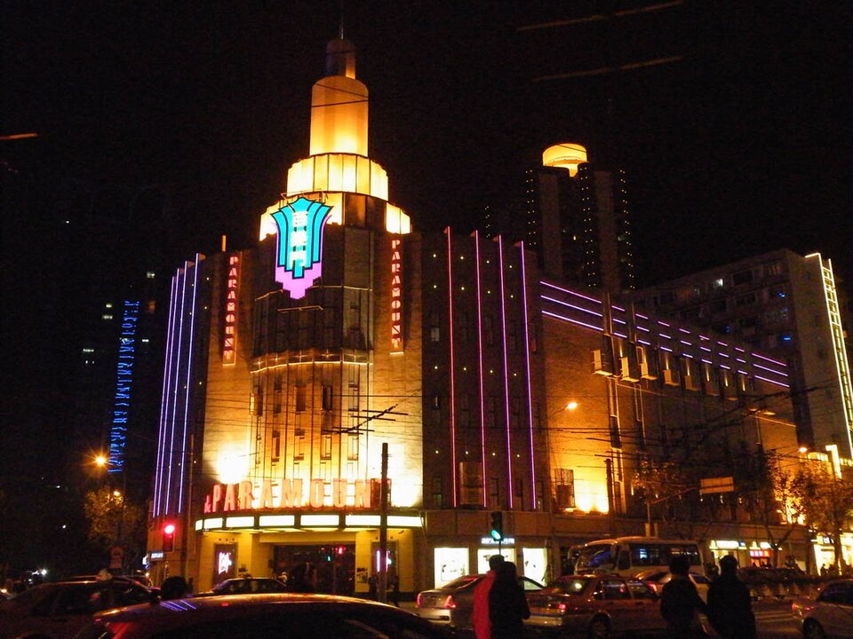

Юйюань, 218. Дом стоит
愚园路218号。房子还在
Оркестр Лундстрема и «Парамаунт»伦德斯特列姆乐队和百乐门
Оркестр Олега Лундстрема собрался в Харбине в середине 1930-х и в 1936 году переехал в Шанхай. Играл в отеле «Янцзы», в «Мажестике» и в «Парамаунте» на Юйюань, 218. Газеты звали Лундстрема королём джаза Дальнего Востока. В 1947-м оркестр уехал в Казань. «Парамаунт» стоит, в 2017 году его открыли снова.
伦德斯特列姆的乐队1930年代中期在哈尔滨组成，1936年搬到上海。在扬子饭店、Majestic舞厅和愚园路218号的百乐门演出。报纸叫他「远东爵士之王」。1947年乐队去了喀山。百乐门还在，2017年重新开门。
Юйюань-лу, 218, район Цзинъань. Танцзал «Парамаунт», по-китайски 百乐门.
静安区愚园路218号，百乐门舞厅。

Прочитать за минуту一分钟读完
В Харбине студент Олег Лундстрем купил пластинку Дюка Эллингтона. С братом Игорем собрал оркестр из девяти человек, руководителя выбрали голосованием. Олегу было восемнадцать. Год у источников разный: 1934-й или 1935-й.
在哈尔滨，大学生奥列格·伦德斯特列姆买了一张艾灵顿公爵的唱片。他和弟弟伊戈尔组了九个人的乐队，投票选队长。奥列格18岁。年份各家不同：1934或1935。
Узнать подробнее了解更多
В 1936 году оркестр переехал в Шанхай. Играл в отеле «Янцзы», в танцзале «Мажестик» и в «Парамаунте». В каком порядке, я точно не знаю, поэтому пишу списком.
В городе тогда было больше сорока биг-бендов. Лундстрема в газетах звали королём джаза Дальнего Востока. Среди песен, которые он переложил на джаз, была «Катюша». Её написали в 1938-м, значит, это уже поздний Шанхай.
В 1947 году оркестр всем составом, с семьями, уехал в СССР, в Казань. К шестидесятилетию его внесли в Книгу Гиннесса как старейший джаз-оркестр, который играет без перерыва.
«Парамаунт» открылся в 1933 году. После реставрации, в апреле 2017-го, его открыли снова, и там опять танцуют. На фото дом 2009 года, ещё до ремонта. Внутри я не был.
1936年乐队搬到上海。在扬子饭店、Majestic舞厅和百乐门演出。先后顺序我不确定，所以列在一起。
那时上海有四十多支大乐队。报纸叫伦德斯特列姆「远东爵士之王」。他改编成爵士的歌里有《喀秋莎》。这首歌1938年才写出来，所以是上海的后几年。
1947年乐队全体带着家属回到苏联喀山。六十周年时被吉尼斯认定为连续演出最久的爵士乐队。
百乐门1933年开张。修缮以后，2017年4月重新开门，里面又有人跳舞。照片是2009年修缮以前拍的。里面我没进去过。
На карте在地图上
Важно не перепутать别弄混
«Парамаунт» — одна из трёх площадок оркестра, не единственная. Год основания — 1934 или 1935. «Катюша» появилась только в 1938-м.
百乐门是乐队演出的三个地方之一，不是唯一的。成立年份1934或1935。《喀秋莎》1938年才有。
Вопрос для школьника给同学的问题
Почему оркестр, который играл в шанхайских танцзалах, в 1947 году уехал в Казань?
在上海舞厅演出的乐队，为什么1947年去了喀山？
Что установлено точно已经核对过的
Пластинка Эллингтона, девять человек, Шанхай с 1936, три площадки, «король джаза», Казань 1947, Гиннесс, адрес и 2017 год. Страницы ниже.
艾灵顿唱片、九个人、1936年到上海、三个演出地点、「爵士之王」、1947年喀山、吉尼斯、地址和2017年。出处在下面。
Что пока требует проверки还要再核对的
Порядок площадок неизвестен. Фото 2009 года, до реставрации. Своего кадра ещё нет.
演出地点的先后不清楚。照片是2009年修缮前的。我自己的照片还没有。
Источники этой страницы这一页的出处
- Оркестр Олега Лундстрема — феномен, начавшийся с грампластинки (calend.ru). Пластинка Эллингтона, девять человек, голосование, 1934, Шанхай 1936, «Янцзы», «Мажестик», «Парамаунт», 40 биг-бендов, «король джаза», «Катюша», Гиннесс.艾灵顿唱片，九个人，投票，1934年，1936年上海，扬子、Majestic、百乐门，四十支大乐队，「爵士之王」，《喀秋莎》，吉尼斯。
- Лундстрем, Олег Леонидович — Википедия. 1947 — оркестр с семьями переехал в Казань.1947年乐队带家属搬到喀山。
- Oleg Lundstrem — Wikipedia. Другой год основания оркестра — 1935.写乐队1935年成立。
- 百乐门 — 维基百科. Юйюань, 218, открытие 1933, повторное открытие 22 апреля 2017.愚园路218号，1933年开张，2017年4月22日重新开放。
Рядом по смыслу:意思上相邻的： «Русский Сокол» и Канидром「俄罗斯猎鹰」和逸园 Хуайхай, бывшая авеню Жоффр淮海路，从前的霞飞路
Последняя правка страницы: 19 ноября 2026. Это дата правки сайта, не дата исторического события.本页最近一次修改：2026年11月19日。这是网页的修改日期，不是历史事件的日期。